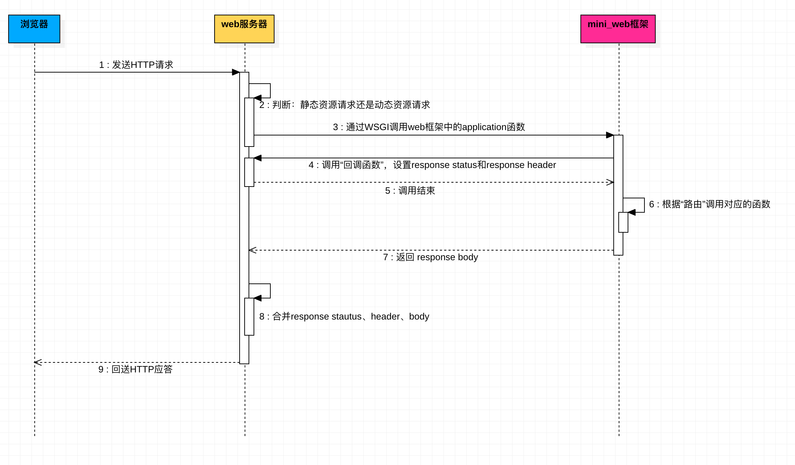
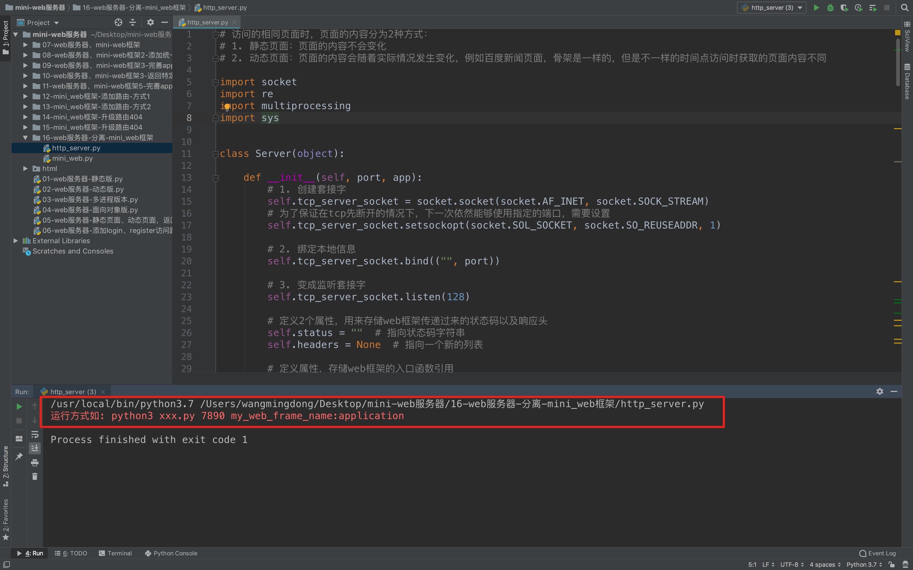
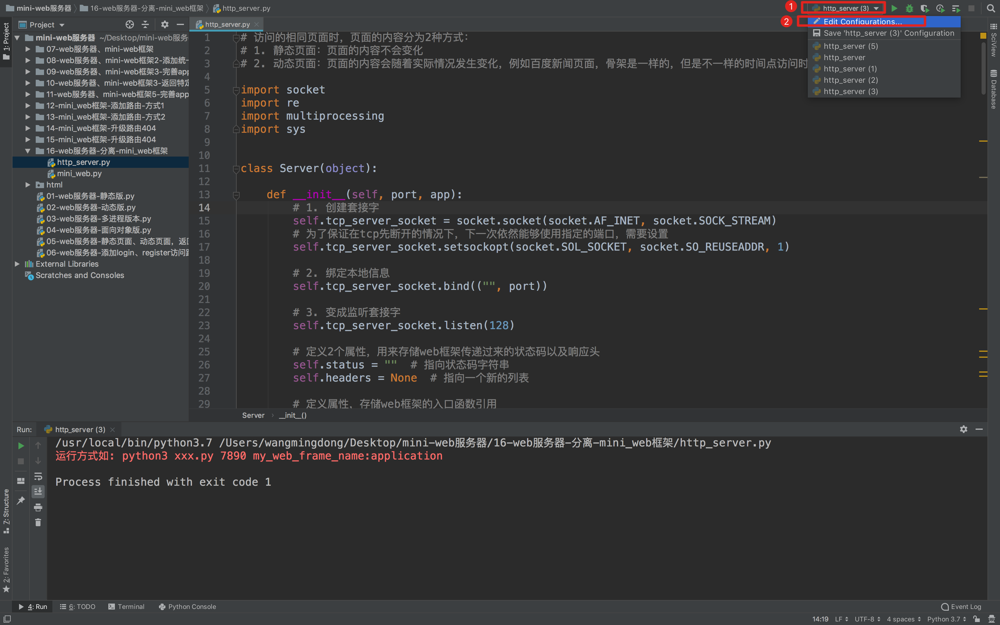
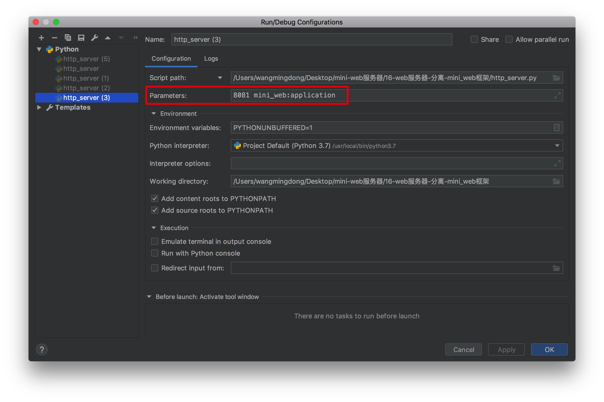
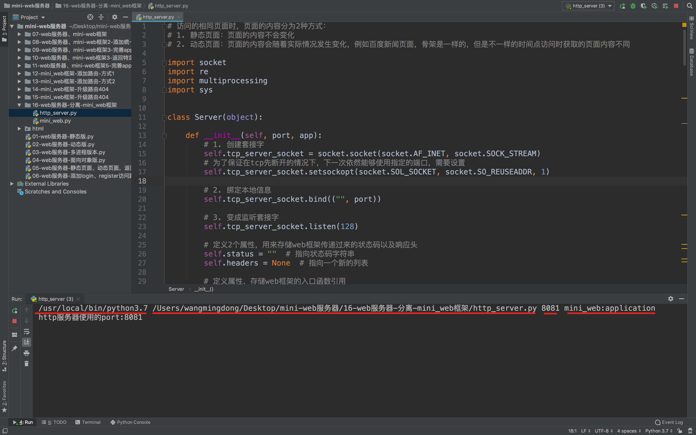

web服务器与mini_web框架-分离
1. 分离的目的

之前我们已经通过WSGI协议，将web服务器与mini_web框架的功能基本分离了
- web服务器，负责：
- tcp服务器
- 创建进程
- 合并response的状态码、响应头、响应体
- mini_web框架，负责:
- 根据url调用对应业务处理函数
- 设置响应状态，响应头
- 返回响应体
但是在web服务器代码 http_server.py中还有一些"藕断丝连"的问题，例如
import mini_web
....
response_body = mini_web.application()
...
正确的做法是，在运行web服务器时，应该执行要运行哪个框架，而不是将框架内嵌到web服务器的代码中
为了解决这个问题，才有了本节知识点
2. 代码实现分离功能
http_server.py的代码更新如下
import socket
import re
import multiprocessing
import sys
class Server(object):
def __init__(self, port, app): # -------- 更新 ----------
# 1. 创建套接字
self.tcp_server_socket = socket.socket(socket.AF_INET, socket.SOCK_STREAM)
# 为了保证在tcp先断开的情况下，下一次依然能够使用指定的端口，需要设置
self.tcp_server_socket.setsockopt(socket.SOL_SOCKET, socket.SO_REUSEADDR, 1)
# 2. 绑定本地信息
self.tcp_server_socket.bind(("", port)) # -------- 更新 ----------
# 3. 变成监听套接字
self.tcp_server_socket.listen(128)
# 定义2个属性，用来存储web框架传递过来的状态码以及响应头
self.status = "" # 指向状态码字符串
self.headers = None # 指向一个新的列表
# 定义属性，存储web框架的入口函数引用
self.app = app # -------- 更新 ----------
def handle_request(self, client_socket):
"""
处理浏览器发送过来的数据
然后回送相对应的数据（html、css、js、img。。。）
:return:
"""
# 1. 接收
recv_content = client_socket.recv(1024).decode("utf-8", errors="ignore")
print("-----接收到的数据如下----：")
# print(recv_content)
lines = recv_content.splitlines() # 将接收到的http的request请求数据按照行进行切割到一个列表中
# for line in lines:
# print("---")
# print(line)
# 2. 处理请求
# 提取出浏览器发送过来的request中的路径
# GET / HTTP/1.1
# GET /index.html HTTP/1.1
# .......
lines[0]
# 提取出/index.html 或者 /
request_file_path = re.match(r"[^/]+(/[^ ]*)", lines[0]).group(1)
print("----提出来的请求路径是：----")
print(request_file_path)
# 完善对方访问主页的情况，如果只有/那么就认为浏览器要访问的是主页
if request_file_path == "/":
request_file_path = "/index.html"
# 如果请求的后缀不是.py结尾，那么就认为是普通的静态资源（就是静态页面）
if not request_file_path.endswith(".py"):
try:
# 从html文件夹中读取出对应的文件的数据内容
with open("./html" + request_file_path, "rb") as f:
content = f.read()
except Exception:
# 如果要是有异常，那么就认为：找不到那个对应的文件，此时就应该对浏览器404
pass
response_headers = "HTTP/1.1 404 Not Found\r\n"
response_headers += "Content-Type:text/html;charset=utf-8\r\n"
response_headers += "\r\n"
response_boy = "----sorry，the file you need not found-------"
response = response_headers + response_boy
# 3.2 给浏览器回送对应的数据
client_socket.send(response.encode("utf-8"))
else:
# 如果要是没有异常，那么就认为：找到了指定的文件，将其数据回送给浏览器即可
response_headers = "HTTP/1.1 200 OK\r\n"
response_headers += "Content-Type:text/html;charset=utf-8\r\n"
response_headers += "\r\n"
response_boy = content
response = response_headers.encode("utf-8") + response_boy
# 3.2 给浏览器回送对应的数据
client_socket.send(response)
else:
# 如果是以.py结尾的请求，那么就进行动态生成页面内容
env = dict() # 定义个字典，用来封装数据，然后传递到application函数中
env["PATH_INFO"] = request_file_path # "/login.py"
# -------- 更新 ----------
response_boy = self.app(env, self.set_status_headers)
# 将header和body进行合并成一个整体，作为response的内容
response_headers = "HTTP/1.1 %s\r\n" % self.status
for header in self.headers:
response_headers += "%s:%s\r\n" % (header[0], header[1])
response_headers += "\r\n"
response = response_headers + response_boy
# 3.2 给浏览器回送对应的数据
client_socket.send(response.encode("utf-8"))
# 4. 关闭套接字
client_socket.close()
def set_status_headers(self, status, headers):
self.status = status # "200 OK"
self.headers = headers # [("Content-Type", "text/html;charset=utf-8")]
def run(self):
"""
用来控制整体
:return:
"""
while True:
# 4. 等待客户端的链接
client_socket, client_info = self.tcp_server_socket.accept()
print(client_info) # 打印 当前是哪个客户端进行了请求
# 5. 为客户端服务
# handle_request(client_socket)
p = multiprocessing.Process(target=self.handle_request, args=(client_socket,))
p.start()
# 如果是创建了一个子进程去使用client_socket，那么子进程会复制一份这个套接字，所以要在主进程中关闭一次
# 这样能够保证在子进程接收且调用close时，能够真正的将这个套接字关闭，如果主进程中没有close。那么即使子进程使用了close
# 这个套接字也不会被真正的关闭，所以就不会有tcp的4次挥手
#
# 简单来说：如果是子进程，那么 就要在主进程中关闭一次
# 如果是子线程，那么 就不要再主进程中关闭，因为线程的方式是共享，而进程的方式是复制
client_socket.close()
# 6. 关闭套接字
self.tcp_server_socket.close()
def main():
"""
完成整体的控制
:return:
"""
# -------- 更新 开始 ----------
# python3 xxx.py 7890 my_web_frame_name:application"
if len(sys.argv) == 3:
# 获取web服务器的port
port = sys.argv[1]
if port.isdigit():
port = int(port)
else:
exit("请输入数字当做端口号")
# 获取web服务器需要动态资源时，访问的web框架名字
web_frame_module_app_name = sys.argv[2]
else:
exit("运行方式如: python3 xxx.py 7890 my_web_frame_name:application")
print("http服务器使用的port:%s" % port)
# 提取框架名称，以及入口函数
ret = re.match(r"([^:]*):(.*)", web_frame_module_app_name)
if ret:
# 获取模块名
web_frame_module_name = ret.group(1)
# 获取可以调用web框架的应用名称
app_name = ret.group(2)
# 导入web框架的主模块
web_frame_module = __import__(web_frame_module_name)
# 获取那个可以直接调用的函数(对象)
app = getattr(web_frame_module, app_name)
# 创建Server服务器对象
server = Server(port, app)
# -------- 更新 结束 ----------
# 调用它的运行方法
server.run()
if __name__ == '__main__':
main()
运行
注意：本次仅仅是修改的web服务器代码，mini_web框架并没有任何修改，请直接使用上次的版本
1. 默认pycharm运行失败

原因：
Python代码中已经明确写明需要多个运行时的参数，而默认情况下pycharm运行时没有带上我们需要的参数，因此会失败
2. pycharm设置运行时的参数


再次运行，看到效果如下：
